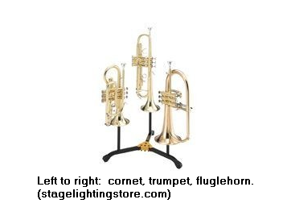

If the toneGAD display panel is too large to fit your screen especially after using the Harmonics mode,
try clicking the "Reduce page size to fit screen" button.
ToneGAD Tone Generator and Display with Microphone
A Guided Tour and Some Information About Harmonics
This page includes information about The toneGAD sketch. You may
find it useful to have both pages open in your browser so you can switch back and
forth between the information here and the actual sketch. Or possibly better yet,
open the two pages in different browsers and arrange them side by side if your screen
is wide enough.
It is my hope that this sketch might be helpful to someone to better understand
wave form physics and music. Hopefully, it might encourage someone to investigate the
concepts more carefully.
A guided tour
This section will acquaint you with the various controls.
The Controls
It is suggested that you begin the tour with a fresh copy of the program. You can
press Reload or Refresh, if needed.
Mode
In the "Mode" panel there are four options: "Off", "Tone", "Piano", and "Harmonics".
The program
starts with the "Off" mode and nothing happens until you select one of the other modes.
In the "Tone" mode, a tone will start to immediately
(assuming your speakers are on). The tone can be controlled by
the other controls. To turn the tone off, switch to either the "Off" or "Piano" mode.
In the "Piano" mode you will need to press certain keys in order to get a tone to play.
"Harmonics" is an advanced mode that will be discussed later.
Volume
Things are more interesting, if you click the "Tone" box. You can vary the volume with
the "Volume"
control either using the buttons whose notations are those used in music or with the slider.
"pp" means very soft while "ff" means very load.
The volume can range from 0 to 100.
The amount of tone you hear at various frequencies will depend on the quality of your
sound generation system and speakers. With my not very HiFi earphones, I can't hear
frequencies below about 35 Hz and above about 7000 Hz. Quality systems might do much
better. Really good humans ears might hear frequencies from 20 Hz up to about 20,000 Hz
if the sound system will produce them.
Advanced: If the "Allow inversion" box is checked, the volume slider range changes.
Normally, the
range is from 0 to 100. When checked, the range becomes -100 to 100. When the volume is
slider is set so the volume is negative, the curve is inverted - that is, turned upside down.
(Mathematically, the wave is
being subtracted instead of added.) Because pure sine waves
are very symmetric, you may not notice the difference unless you look very closely with
the update rate set to 1. But it is much more obvious when sawtooth waves are selected.
Observe the slopes change from going uphill to the right to downhill.
Frequency
Next move to the "Frequency" control which provides
3 different ways to select the frequency or pitch. The higher the frequency, the higher pitch
the sound seems to us. The top 4 buttons:
"100 Hz". Hz stands for "Hertz" or "cycles per second". 100 Hz was selected just
because it is a convenient number.
"Middle C". This the pitch is Middle C on the piano. Its frequency shows in the
display.
"A": Over the years, several different frequencies have been used for the key of
A above middle C. In 1926, the American music industry agreed to use 440 Hz for
A. It was adapted an international standard in 1955 although not every one agrees.
Orchestras is the U.S. and U.K. normally tune their instruments to A pitched at 440 Hz.
"B flat": Most concert, marching, and brass bands tune on "B flat" which just a little
higher than "A". The reason: many band instruments are pitched in B flat.
Just below the those buttons is a slider that allows adjusting the frequency anywhere
between 50Hz and 2200Hz.
Below them are 10 multiplier buttons which multiply the selected frequency by the
indicated number. Later we learn the multipliers 1 to 10 are also called harmonics.
(While initially exploring these buttons, it strongly suggested that you select
"100 Hz" button.) The default is "1". "2" multiplies the selected frequency by 2, "3" multiplies
it by 3 and so on. The selected button is shown in "red". In music, doubling the frequency
increases the tone by 1 octave, reducing the tone by 1/2, lowers by 1 octave. This makes
the multipliers 1/4, 1/2, 2, 4, and 8 especially interesting as they can reduce the
pitch by 2 octaves or 1 octave or increase it by 1, 2 or 3 octaves.
The following table show the musical notes produced by the harmonics
of the 3 special frequencies available by clicking a button.
Multiplier
C Fundamental
A fundamental
A sharp/B flat Fundamental
1
Middle C
A, above middle C
B flat, above middle C
2
C, 1 octave higher
A, one octave above
B flat, one octave above
3
F, above that C
E, 2nd octave above
F, 2nd octave above
4
C, 2 octives higher
A, 2nd octave above
B flat, 2nd octave above
5
D, 2 octives higher
C sharp, 3rd octave above
D, 3rd octave above
6
F, 2 octives higher
E, 3rd octave above
F, 3rd octave above
8
C 3 octave higher
A flat, 3rd octave above
B flat, 3rd octave above
(Multiplier 7 was omitted from the above chart because the corresponding
notes (A sharp, G, and A flat) are flat and are avoided musically but
appear naturally.)
FFT and the two displays
In case you are wondering, "FFT" stands for "Fast Fourier Transform", a
mathematical way of analyzing periodic (regularly repeating) functions. But don't
worry. You will not need to
do any math. But fortunately we can take advantage of its results. (I was able
to advantage of somebody else's coding and didn't have to do the code the
mathematics!)
The upper display shows an image of the wave. If the display seems to be too bouncy
to understand, try clicking on one of the "1 time/sec" button. Then the upper display will
show a snap shot of the wave which is updated the indicated number of times each
second. Assuming that the wave form is still a sine wave, you should see a nice image
of the common sine wave if the frequency is somewhere between 100 Hz and 3000 Hz.
Below that, you may see only part of one cycle, above that you may see a smear.
You will the notice the width of a set of humps in the curve gets smaller as the
frequency increases.
If you are still displaying a sine wave, you will see a spike at the specified frequency
in the lower display. The spike was produced by some rather complicated mathematics
that "listens" to the music and determines what frequencies are in the tone being
produced. Right now there is a pure tone and only 1 frequency is being detected.
Later in our discussion we will listen to more complex tones and the FFT analysis
will pick up multiple frequencies in the sound. In any case, the analysis figures out
what frequencies are in the tone by sampling ("listening" to) the tone. It didn't pay attention
to the button you used to select the tone.
(We will discuss this display again when we look at other wave forms. It will be much
more interesting then and the "Show peaks" check box may be useful at that point.)
Wave Control
You are probably tried of listening to the sine wave. So lets try some of the other
options. Looking at the wave forms in the upper display, you can easily understand
the names for the triangle, sawtooth and square wave. The later is the easiest to
understand. A square wave could be produced by just turning on and off an
electrical circuit in a periodic fashion. I am not sure how this program produces
the wave because again I am taking advantage someone else's coding. One could assume
that the triangle and square wave could be produced by turning a voltage control
up and down periodically but again I can't say how this program does it.
The lower display becomes quite interesting with these wave forms.
It will be easiest understand them if you set the frequency to 100 Hz and the
multiplier to 10 giving a 1000 Hz tone and turn on the "Show peaks" option in the
FFT display. If you look at the triangle or square wave forms, you will see
peaks at 1000 Hz, 3000 Hz, 5000 Hz .... . One the other hand, if you look at the
sawtooth wave, you will see peaks at 1000 Hz, 2000 Hz, 3000 Hz, ... . What gives?
You picked 1000 Hz but the FFT analysis says that tone contains several
multiples of the specified frequency. It is those extra frequencies that make these
alternate wave forms sound different the pure sine wave.
Comment: Don't be disturbed that the frequencies in the "Show peak" display
in the upper right corner of the lower display are not exactly those numbers. The
reason is that the analysis divides all the frequencies up to about 25,000 Hz into
1024 "bins". Each "bin" is about 24 Hz wide and the number report in the peak
display is more or less an average for those frequencies. So if the peak is reported
by 1006 Hz, it means that the analysis saw some frequencies near 1006 Hz which
would certainly include the 1000 Hz we expected see. At high frequencies,
having 24 Hz wide bins is not a major problem but it is when the frequencies
are lower and the reported peaks will not be very accurate.
Consider the sawtooth wave. FFT reports that the frequncies 1000 Hz, 2000 Hz,
3000 Hz, ..., all present in the sound that we hear.
Notice these frequencies are all multiples
of the base frequency 1000 Hz. The height of the peak gives you some idea of the
amplitude needed although some may actually be positive and some negative. On
the other hand, the triangle and square waves only use the odd (1,3, 5, 7, ...)
multiples of 1000 Hz. The even (2,4, 6, 8, ...) multiples are not needed because of a certain
symmetry in the wave form. It turns out that the sound from some musical instruments
contains only the odd multiples (or harmonics) but both even and odd harmonics
may be produced by other instruments.
The peak frequencies that you see with these wave forms are sometimes called
harmonics or overtones. In the harmonics section we will discus
why the musical notes we hear are affected by the harmonics the wave form
generates even though nice musical tones rarely have the extreme shape of the
three none-sine wave options.
The Piano mode
The piano mode allow you to individual play individual notes using keyboard keys
To see the keys that work, just click the "Piano Note Notes" button. You will see
there are two ways. You can use the note names like "a", "b", ..., in lower case while
capping a letter to gets you its sharp (for those keys that have sharps). In some cases,
it is more convenient to use the top row of keys on a standard keyboard which include
the number keys. The notes sound as long as you hold the key down. Their
(approximate) frequency shows in the Frequency control. The Volume
and Wave Form controls work as normal. The multipliers are reset to 1 when one
enters the "piano" mode and before and after every note. But while a note is playing,
you can use multipliers in their normal fashion.
In attempt to mimic many instruments, notes are accented at lower volume levels
when the notes starts and they decay slowly when the key is released.
Advanced: If you hold a key down while playing a note in the piano mode,
you can change the volume using the Volume control. However, changing the volume
with a slider in the Harmonics control does not change the current volume. This
mimics the response of a piano where it is impossible to change the volume of note
while it holding its key down.
The Harmonics mode
Until you select the "Harmonics" mode, you will always hear the single pitch as
shown in the frequency display. That pitch is called the "first harmonic" or
"fundamental" It is the pitch you heard when the multiplier buttons are set at "1".
After selecting the "Harmonic" mode, you can play a note together with some of its
harmonics.
When you select "Harmonic" a new control opens below the other controls. It
will stay open even when you select another mode. The other thing that happens
is that the Wave will be changed to "sine" because normally one studies harmonics
with "sine" waves. However, you can select another wave type, if desired.
After the harmonic control is displayed, the "Harmonics" and "Tone" modes are
identical.
We will continue this discussion assuming the "sine" is being used. It may
be helpful if you set the frequency slide bar for a frequency about 1000Hz. You
will not be able to get 1000 exactly, just something close to it. If you click
some of the harmonic checkboxes, that multiple will be added to the sound you hear. The
wave form will no long be a simple "sine" wave. The harmonics will show up
in the lower display. You can adjust the harmonic's slide bar to adjust the
intensity of the harmonic. In a later section, you will learn that most musical
instruments produce harmonics which give the instrument it characteristic tonal
quality. Those harmonics give
the instrument its distinctive tone when a note is being held. In the "Experiments"
section of this paper, we study how harmonics can be used to produce
other wave forms. For the time being, you may enjoy playing with
the different harmonics at various intensity levels.
What about the "Set volume ..." buttons? They will be useful in the Experiments
section.
The Microphone mode
When you turn on the microphone mode the first time, your browser will ask you
if it is OK if this program uses your microphone. The browser is trying to protect
you from rouge programs that might secretly turn on your mic and send any sound
it picks up over the internet without your knowledge. A microphone symbol indicating
a microphone is allowed will probably appear near the top of the browser.
(This action is similar to the
action it takes if the program wants to use your camera.)
But this program only displays the analysis of any sound it picks up.
The first time you turn on the mic, microphone level slider appears in the
mode control and some information about the microphone
level appears between the two graphic displays. This information continues
to be displayed even if you switch to different mode.
Then you will have to turn up the mic volume control to a point where the
right hand red light in the microphone display lights occasionally.
When you are in the microphone mode, all tone generation is turned off..
How can harmonics be used to produce different pitches?
In this section, we will look at how brass instrument players take advantage of
harmonics. They can even be observed on some string instruments like a guitar.
Pianos, organs and woodwind instruments have lots of keys that allow the musician
to play lots of different notes. String instruments may have only 4 or 6 strings, but
the player can press the string at various points to pick the desired frequency.
But have you ever noticed that most brass instruments
like trumpets and tubas typically only have three valves? They can be used in
combination, but for practical purposes, there are only 7 different combinations.
How in the world can brass players produce lots of different notes? Typically, the
length of the tubing determines the frequency of sound and the purpose of the
valves is to change the length of the tubing. The valves allow for 7 different
tube lengths. (Trombone players effectively only have the same 7
options but they are able to adjust the slide in between those options.) Again, how
can brass players produce lots of different notes?
The answer is they use their
lips to produce different harmonics. It is something like selecting one of the
multiplier buttons in the Frequency control. Most players use there lips to produce
harmonics (or multipliers) of 2, 3, ..., 6. An excellent player (depending on the
instrument) can pick harmonics from 1 to 8 or possibly even higher. Harmonic 1,
called the fundamental or petal tone, is often hard to produce. Harmonics higher
than 6 take lots of practice to control in a useful manner.
Lets take a closer look at the trombone, in part because I try to play one. (The
other part is the trumpet players actually play B flat when they call the note being played C
which may be confusing.)
Recall
that we said the concert bands typically tune on B flat because most band
instruments are pitched in B
flat. Trombones are pitched in that key. If the trombone players leave the slide
all the way closed, they can play
harmonics based on B flat. (Trumpets can get the same effect if they leave all
their valves up only they are an octave higher because their tubing is only half as long.
But for reasons that musicians can only understand, they call it C.) Lets
look carefully at the harmonics of a trombone with the slide closed.
1st harmonic, multiplier 1: a low B flat two measures below Middle C on the
piano but remember it normally is very hard to play. It is sometimes called the
fundamental or petal note.
2nd harmonic, multiplier 2: Remember that multiplier 2 produces a tone one octave
higher, so it is also B flat, one octave below middle C.
3rd harmonic, multiplier 3: F below middle C
4th harmonic, multiplier 4: As we know, this is 1 octave above the 2nd harmonic so
it is the B flat just below middle C.
5th harmonic, multiplier 5: D just above middle C.
6th harmonic, multiplier 6: 6 is twice 3, so this another F, this time above middle C.
7th harmonic, multiplier 7: A rather flat A flat so it is not normally used on a
trombone and almost never on other brass instruments with valves.
8th harmonic, multiplier 8: 8 is twice 4. So can you guess that it is also a B flat,
an octave above middle C. Typically only expert players can produce this harmonic
well enough to play it a concert.
Exactly the same concepts apply to baritones and
euphoniums. while a Double B flat tubas plays one octave lower because their tubing is
twice as long. Trumpet players play
the same harmonics but because their tubing is only half as long,
the notes are an octave higher. (Remember that for musical reasons understood by
trumpet players, the would call the harmonics C, C, G, C, E, G, a flat B flat that would
almost never be used, and C. The French horn,
alto horn (also called tenor horn, E flat horn, or althorn), and the E flat tuba are pitched
differently and have different fundamentals but the harmonics work the same
way.
We have discussed these harmonics on brass instruments, but they also apply
to stringed instruments like a guitar. Have you ever looked closely at a thicker,
heavier, lower note string vibrate? If you have, you will notice that it vibrates with
the shape similar to the top half of a sine wave. To play a note one octave higher,
guitar players press string at the half way point and only half the string vibrates.
But if the one very gently touches the string at the half point, the first harmonic is
suppressed and one may see
both halves of the string vibrate - the string is now vibrating in two sections - the second
harmonic. In theory, we could try gently touching string 1/3 of the way down. This
would mean neither the first or 2 second harmonic could sound and the string would
be vibrating in 3 sections producing the third harmonic. Actually the harmonics
were being produced when we thought we were just playing the fundamental.
What appeared to us as string vibrating with the first harmonic, is actually much
more complex. The string was also vibrating in ways that produced some
of the higher harmonics. Similar things can happen on a violin. Composers
sometimes ask a player to touch a string and produce harmonic in order to give
the instrument a different sound.
You may wonder how the harmonics work in brass instruments. The following is
a very simple minded explanation and not really 100% accurate. Playing harmonic 1 means
that one period of the sine wave uses the entire length of the pipe. When brass
players users use their lips to play the 2nd harmonic, they are effectively getting the
instrument to vibrate in two sections in much the same manner as we were able
to produce the second harmonic on the guitar. If they play the 3rd harmonic, they
are getting
instrument to vibrate in three sections and so on. Fortunately, their harmonics can be
played usefully and loudly on brass instruments although they would be quite soft
on the guitar.
How can harmonics help enhance music?
Harmonics which are often call overtones in this context, are important in making
music enjoyable to listen to.
In the previous section we looked at how harmonics can be used to produce
different pitches especially in brass instruments. In this section we will look at how
harmonics, often referred to as overtones in this context, enhance almost
all music. Harmonics (or overtones) help explain why a trumpet sounds different
than a guitar or flute even they are holding on the same note.
Did you find that sine wave sound boring? They are just too pure. If you played
much in the piano mode on this program, you might have found yourself preferring
to use one of the other wave forms even though they are not really nice sounding.
Even the human voice is enriched by harmonics.
In the previous section, we spent a little time discussing how harmonics could be
produced on a guitar. Actually, even when a player is playing a certain note
higher harmonics are occurring at the same time. Even though
we may think we are only hearing the first harmonic or fundamental, it is the harmonics
that help the note to sound pleasing to us instead of being a boring sine wave.

Trumpets, cornets, and flugalhorns
As the first example, we are going to look at trumpets, cornets, and flugalhorns.
If you are not familiar with these instruments, you might want to look at the video
https://www.youtube.com/watch?v=ZhfGM19bsmM where the presenter
compares these instruments and their sound.
The typical versions of these instruments are all pitched in B flat and have the
same valves. Players can move from one of the instruments to the other without
much difficulty although a player may specialize in just one of them. One the other
hand, perhaps you may have seen trumpet players switch to the flugalhorn in the
middle of the piece. Why would they do that? The answer is they have a different
sound. But why do they sound different even when they play the same note? The
answer is they produce different harmonics or overtones. The tubes in a trumpet are
straighter and have a smaller diameter. That means that the higher harmonics
are more pronounced giving the trumpet a more brilliant, piecing tone. On the other hand, the
rounder, somewhat larger diameter tubes in the flugalhorn give it a mellower tone with
less of the higher harmonics.
The cornet might be considered an compromise between those two extremes.
Pipe organs
As seen in the picture at the right, larger pipe organs often have several different
kinds of pipes. There are multiple pipes of each style as they are needed produce different
pitches. This organ has both square and triangular shaped wood pipes as well
metal pipes of different shapes. Why? The different materials and shapes produce
sound with differing amounts of harmonics or overtones. As a result, the sound
coming from the different style of pipes has a different tonal quality even when
they are playing the same note.
As mentioned, it is the harmonic spectrum of different instruments
that make them sound different. The picture on the left comes from
a video
where the presenter plays the same note on different instruments
to help illustrate the importance of harmonics. Towards the end, he
shows the harmonic spectrum of several instruments including this
picture which shows the spectrum of a piano. The image was produced
by using a microphone to capture the sound of the piano and then having
a FFT analyzer sample the sound and produce a chart showing the
frequencies it found in that sound. Notice the regularly spaced peaks
for the harmonics.
Below are the FFT spectrum analysis for cello and a guitar. Again
note the regularly spaced harmonics which mean the cello and guitar
sound different even when they play the same note.
A final note: If you search on-line for "musical harmonic spectrum" or
something similar, you will find some spectrum images similar to those
presented above where the peaks are spaced regularly. However, some
may be confusing at first because the peaks get closer together on the right.
The reason is the frequencies are shown on what is called a log scale
instead of the equally spaced scale that we have been using. On these
charts, octives are equally spaced. That is, the octave from 100 Hz to
200 Hz has the same width as the octave from 200 Hz to 400 Hz and
the octave from 400 Hz to 800 Hz, and so on. In some respects that is a
better way to show sound spectrums because that is the way we hear them.
Higher harmonics sound close together. However despite
that fact, that I like to show equally spaced harmonics.
Experiments with harmonics
We can use the program to experiment with harmonics.
A simple experiment with inversion.
With the "Allow inversion" option turned on, turn off all the harmonics except
for the 1st harmonic and adjust its volume to 100, if needed. Observe the wave form which
should be a perfect
sine wave then turn it off. Adjust the volume 6th harmonic to a positive value of approximately
.4. Turn on that harmonic and observe its wave form. Notice it is vibrating 6 times as
fast. Turn it off. Turn on the 1st harmonic and then turn the 6th harmonic back on. Can you
see how the two harmonics are added? Now slowly decrease the volume of the 6th harmonic
to about -.4 and observe the wave form as you go. Can you see that the inverted harmonic is being
subtracted from the 1st harmonic?
You may want to experiment with other harmonics and volumes.
The 2nd experiment: Creating complex wave forms.
Discussion: In this experiment, we will show that it reasonable to think that
sawtooth and square waves can be approximated by using harmonics of the fundamental
frequency.
Perhaps you were wondering why by default the sliders in the Harmonic control
were positioned the way they were and why there are special buttons to set the
harmonic volumes to 1/n and 1/n2. These volumes were chosen not random.
Consider the default harmonic volumes (and those set by the 1/n button).
The value for harmonic 1 is 100/1 = 100,
the value for harmonic 2 is 100/2 = 50., the value for harmonic 3 is 100/3 = 33.3 (at
least to the nearest tenth) and so on. These values were picked because they
lead to some very interesting results.
The experiment: Refresh or reload the program to make sure the values are as
expected and select the Harmonics mode. Select a convenient frequency like "A" or
1000 (or something near it). You will see a nice sine wave. Turn on the 2nd harmonic
and observe the wave in the upper display. Then turn on the 3rd harmonic and
turn on observe the wave again. Do you see something interesting? Continue turning
on the next harmonic and observing until you are using all 8 of the harmonics. Now
just suppose that you were able to add in the 9th, 10th, 11th, ... harmonics. If we could
do this a hundred times, what do you think we would get?
Repeat this experiment. Turn off all the harmonics. Repeat the experiment but this time
only use the 1st, 3rd, 5th, and 7th harmonics. Leave the other harmonics off.
What do you think the wave would look like if we could use 100 or more odd
numbered harmonics?
Now check the "Allow inversion" check box. Turn off harmonics 2 to 8 and click the
"Set volume: ± 1/n2 " button. Turn on the 3rd, 5th, and 7th harmonics
one at a time, observing the wave form each time. Once again, if we had 100 odd
numbered harmonics available, what do you think we would get?
If you would like to see what the results could be if you could add lots of harmonics,
check out GraphingSeries.html which allows
you to add lots of harmonics so you can see what happens as more and more harmonics
are added at the right intensity. It shows how the square wave, sawtooth
and triangle waves can be approximated by using lots of harmonics.
Unfortunately, generating the triangle wave requires "subtracting" some harmonics
which is the reason for that ± was added to the 1/n2 button when
the "Allow inversion" option was turned on. Mathematically inversion (when the volume
of the harmonic is negative) is equivalent to subtracting the wave form instead of adding
it.
(In case you are wondering about the "1/n2", it means the volume was
selected by dividing 100 by the square of the harmonic number. For harmonic 1,
that means 100/12 = 1/1 = 1. For harmonic 2, we get 100/22
= 1/4 = 25 and so on. The plus and minus signs were selected just to get the desired
wave form for this experiment.)
Why does it sound bad to play two notes very close to each other?
This program doesn't allow you to play two notes next to each other on the piano but
we can come close using the 7th and 8th harmonics. For example, if we start out in
C frequencies, we know the 8th harmonic is also a C only 3 octaves higher. The 7th
harmonic would a somewhat flat B flat just below it. Those notes are pretty close
and we can begin to see the problem.
You could use just about any note as the fundamental (1st harmonic) but it is pretty
easy to see the problem if you use 100 Hz as the fundamental. In the harmonic control,
set the sliders for harmonics 7 and 8 both at 50 (or very close to it). Then turn off
harmonics 1 to 6. Turn on harmonics 7 and 8 so you are seeing only the 7th and 8th
harmonics. (You may want to do this with the
sound turned off if the sound is too bad.) Now click the 1/4 multiplier button.
Watch the upper display to see the wave form that is generated. Then click the 1/2
multiplier, the 1st multiplier, and so on still watching the wave display. Some where
along the line you should begin to something
interesting. It is very obvious with the number 10 multiplier if you use 100 Hz as the
fundamental frequency. (If you use a higher fundamental like B flat, you may have
the best results with multipliers in the range of 3 to 5.) You see a relatively high
frequency wave bounded by a low frequency wave.
You can imagine what happens when someone
plays to keys immediately next to each. Even worse is if players play the same note
but one of the players is a little out of tune.
Some formalities
The version, source files and author.
Version 2.1.2, 3/7/2020. This is a draft version and improvements are expected. 2.0 introduced
the harmonic control and the separate help page. 2.1 allows volumes to be negative and the waves
to be inverted.


{kind=link}
{kind=link}
{kind=link}
{kind=link}